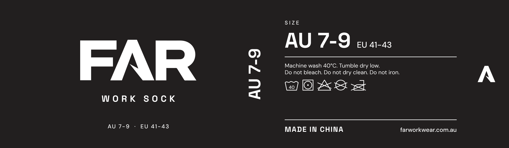
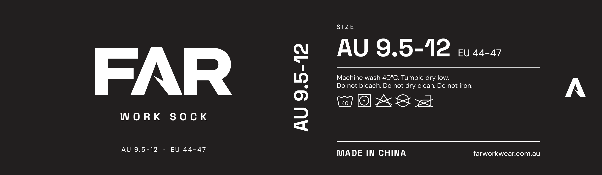
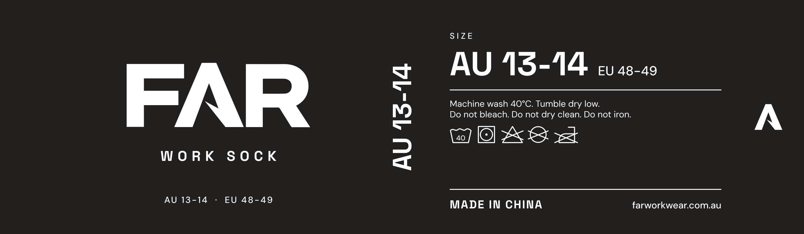
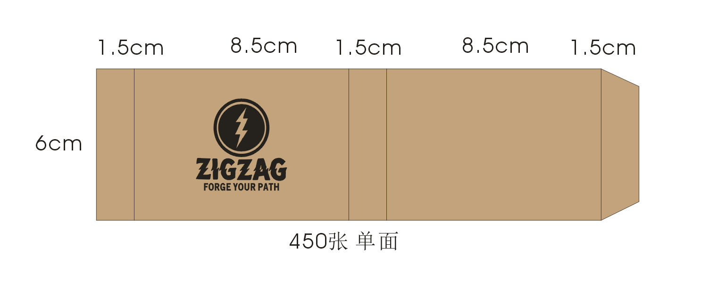
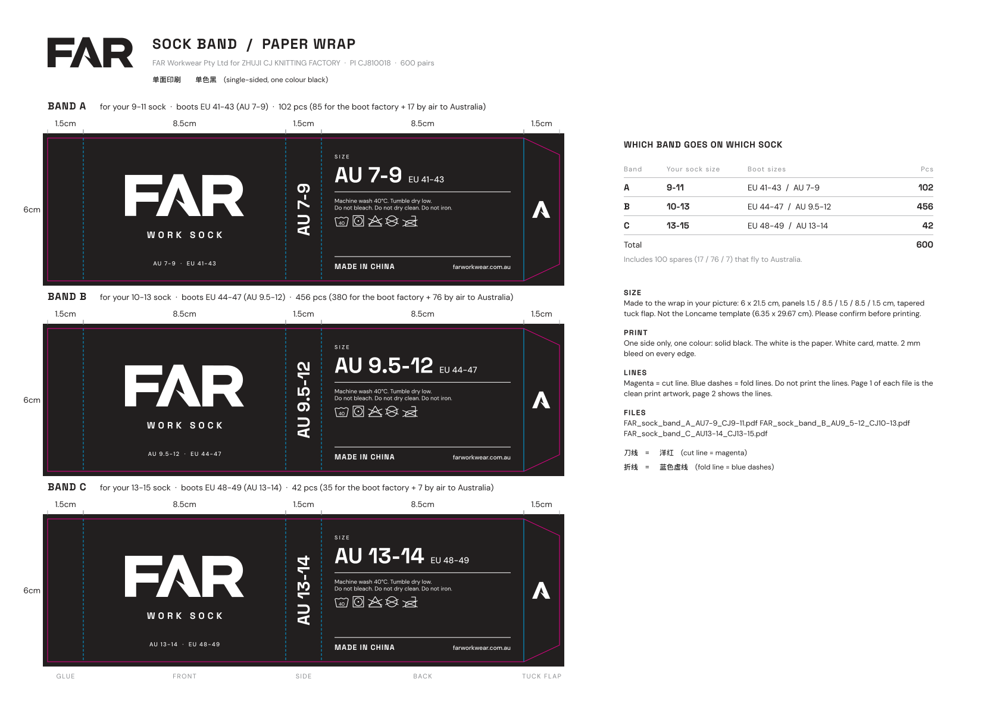

The paper wrap around every pair of FAR socks. Tue 6 Oct.
Mary sent the price for the 500 socks and the size of her paper wrap. This is our artwork, drawn to her exact size. There's one band for each of her three sock sizes, so the boot factory can put the right sock in the right box.

Band A: boots AU 7-9 (EU 41-43). 85 pairs for the boxes + 17 spares.

Band B: boots AU 9.5-12 (EU 44-47). 380 pairs for the boxes + 76 spares.

Band C: boots AU 13-14 (EU 48-49). 35 pairs for the boxes + 7 spares.
Left to right: a glue strip that gets covered, the front, the side, the back, and a tuck flap with the A on it. The front says FAR, WORK SOCK and the size. The side shows the size in big letters so the packers can read it in a carton. The back has the size, the washing instructions (the law says socks have to carry them), Made in China and the website. The washing symbols are the five on the template Mary linked: wash at 40, tumble dry low, no bleach, no dry cleaning, no ironing. The strip on the far left gets covered when the band closes, so it's left blank.
It's one colour, black, printed on white card. That's the cheapest print job there is, and it matches the black box.

Her size: 6 cm tall, 21.5 cm long. That's another customer's band, she sent it to show the size.
She also linked a template from a different sock factory, and that's the PDF in the Drive folder. It's a different size (29.7 cm long), so we didn't use it. The email asks her to confirm the size before she prints.

The sheet that goes to Mary: all three bands at real size, the measurements, and which band goes on which sock.
| Per pair | All 500 | |
|---|---|---|
| In our budget since 5 Oct | $8.34 | $4,170 |
| Mary's invoice, as sent | $9.12 | $4,559 |
| What we're ordering: AU 12s in the middle sock, and asking her to drop the $50 US shipping | $8.73 | $4,365 |
| Plus 100 spares, flown to us (her price includes freight, customs and tax) | $9.66 | $966 |
That's Australian dollars at the rate the bank gave us on the boot deposit. The bigger sock (13-15) costs a US dollar more a pair, plus a one-off $100 US for a new mould.
The sock was already in every box in the budget. Socks went on the box list at the 4 Oct meeting, and the "what's left per pair" numbers already take the sock out: about $103 a pair on the first 100 at $219, and about $130 a pair after that at $249. Mary's real price moves that by 39 to 78 cents a pair.
For comparison, a decent work sock costs $18 to $45 a pair in the shops.
The long version lives in the manufacturing files (the CJ socks log). This link isn't listed anywhere, but anyone who has it can open it.